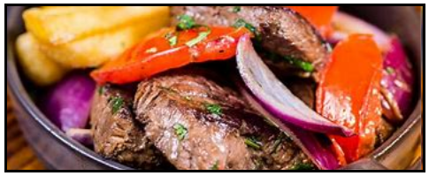
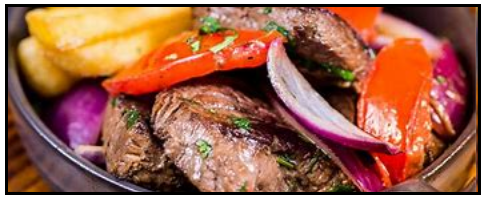
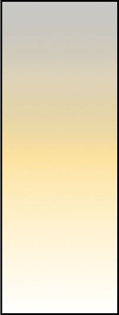
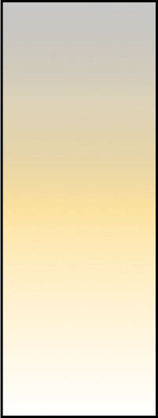

Las mejores recetas de las cocinas peruanas.
Para que puedas ser un gran cocinero.

Peruvian Foodies te enseña a preparar unas deliciosas recetas peruanas.
Sobre nosotros
 

 


El valor de
nuestras recetas
Buenas recetas
¡Nuestras recetas son muy agradables, bonitas y muy ricas! Ud. puede preparar estas delicias de la gastronomía peruana.
Recetas nutritivas
Estas recetas tratan de ser las más nutritivas para que tu salud siga funcionando adecuadamente.
Buen tiempo
Estas recetas, pueden prepararse en unos cuantos minutos y/o horas. Si eres una persona ocupada, estas recetas serán ideales.